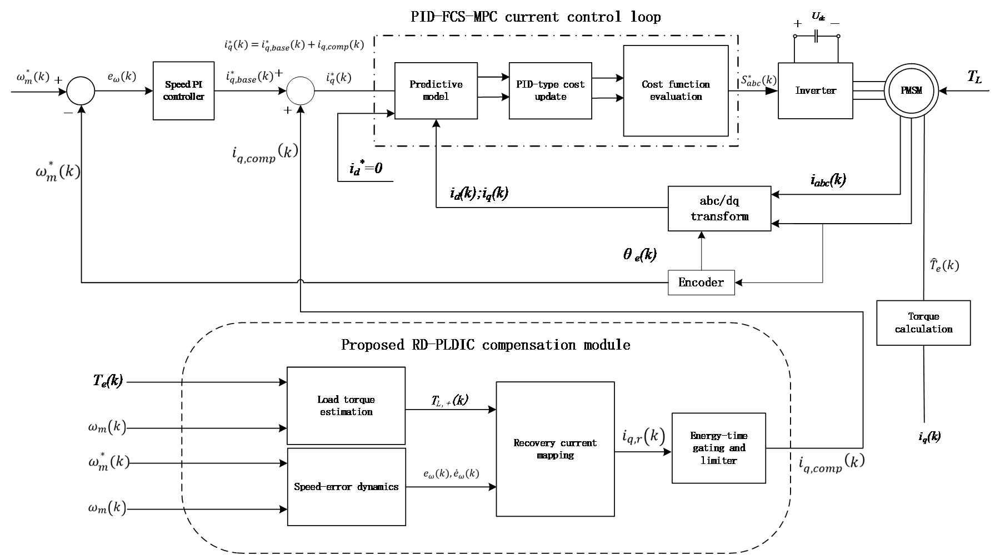

PSPE 2026
Recovery-Dynamics-Oriented Predictive Load-Disturbance Iterative Compensation for PMSM Drives
School of Transportation and Electrical Engineering
Dalian University of Science and Technology
Published · PSPE 2026

Abstract
A sudden increase in load torque can cause a permanent magnet synchronous motor (PMSM) to lose speed before its speed loop raises the torque-producing current. This project studies a recovery-dynamics-oriented predictive load-disturbance iterative compensation method (RD-PLDIC) for a PID-type finite-control-set model predictive current controller.
RD-PLDIC adds a temporary correction to the q-axis current reference. Positive load estimation supplies disturbance information, a recovery-current mapping translates the speed-recovery demand into current, and an energy–time gate limits the correction after the main recovery interval. The reported results show shorter recovery and lower accumulated speed error in the tested positive load-increase simulations.
Method
- Estimate the positive load disturbance. Estimate load torque from electromagnetic torque and rotor-speed dynamics using the mechanical equation. Low-pass filtering smooths this estimate, and a positive-part operation retains the load-increase component used by the compensator.
- Map the recovery demand to current. Combine the estimated positive load torque, positive speed error, and error-growth tendency to generate a temporary q-axis current request. This supports acceleration back to the speed reference.
- Limit and gate the correction. Filter and saturate the current request, then apply a gate based on speed-error energy and elapsed activation time. Add the resulting compensation to the speed PI controller's q-axis reference. The PID-FCS-MPC voltage-vector enumeration remains unchanged.

Simulation setup
The main comparison uses a 750 r/min speed reference and a 0→9 N·m load-torque step at 0.30 s. The numerical plant uses nominal parameters. The predictor uses 120% of the nominal resistance, d/q-axis inductance, and permanent-magnet flux linkage, corresponding to a 20% predictor-parameter mismatch.
| Parameter | Value |
|---|---|
| Pole pairs | 4 |
| Stator resistance | 1.5 Ω |
| d/q-axis inductance | 11.1 mH |
| Permanent-magnet flux linkage | 0.27 Wb |
| DC-link voltage | 200 V |
| Sampling period | 40 μs |
| Rotor inertia | 0.006 kg·m² |
| Viscous damping | 0.0005 N·m·s/rad |
| q-axis current-reference limit | 8 A |
| Compensation-current limit | 1.05 A |
The comparison includes conventional PI control, PID-FCS-MPC, PID-FCS-MPC with disturbance-observer feed-forward compensation (DOB-FF), an ungated RD-PLDIC ablation, and the complete method. Recovery time runs from the load step to the first instant when the speed error enters ±5 r/min and remains in that band for 0.02 s.
Results
The following values belong to the same main simulation case: 750 r/min, a 0→9 N·m load step, and predictor parameters at 120% of nominal values.
| Metric | PID-FCS-MPC | RD-PLDIC |
|---|---|---|
| Maximum speed drop | 229.90 r/min | 190.83 r/min |
| Recovery time | 0.2390 s | 0.1654 s |
| Speed IAE | 17.389 | 11.540 |
| Speed ITAE | 1.3305 | 0.6391 |
Against DOB-FF, the manuscript reports similar initial speed-drop suppression and reductions of 29.99% in recovery time, 19.35% in speed IAE, and 41.07% in speed ITAE. Peak q-axis current is 7.733 A for RD-PLDIC and 7.721 A for DOB-FF.
The gate ablation examines the duration of compensation after recovery:
| Metric | Ungated RD-PLDIC | Gated RD-PLDIC |
|---|---|---|
| Recovery time | 0.1517 s | 0.1654 s |
| Compensation duration | 0.5000 s | 0.0855 s |
| Post-recovery compensation-current peak | 0.8246 A | 0.0129 A |
The gate slightly increases recovery time while substantially reducing persistent compensation after the main recovery interval.
Scope and limitations
Validation currently covers numerical simulations of positive load-increase recovery. The reported improvements apply to the tested models and operating conditions. They do not establish performance on a physical drive or a guaranteed actual-current bound.
Hardware experiments, target-processor timing, load reduction, speed reversal, regenerative braking, measurement-noise sensitivity, and sampling-delay effects remain to be evaluated.
Publication
Haoyan Zhang and Liang Shen. Recovery-Dynamics-Oriented Predictive Load-Disturbance Iterative Compensation for PMSM Drives. 2026 5th International Conference on Power System and Power Engineering (PSPE), IEEE, pp. 207–210, 2026. DOI: 10.1109/PSPE71359.2026.11780839.
Published in the PSPE 2026 proceedings. Presented as a poster on September 12, 2026, in Dalian, China. The authors are affiliated with the School of Transportation and Electrical Engineering, Dalian University of Science and Technology.
Read the author's accepted manuscript (PDF)
© 2026 IEEE. The download is the author's accepted manuscript. The version of record is available on IEEE Xplore.